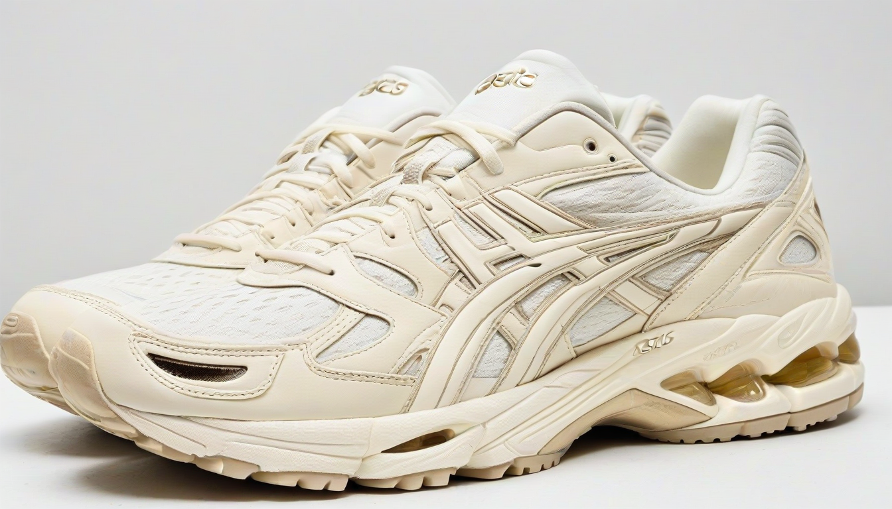

아, 진짜. 이놈의 서류 더미는 언제쯤 끝날까 싶어요. 며칠째 강서구 화곡동 XXX빌딩 3층에 있던 룸 영업장 임대차 계약서랑 정산 내역만 들여다보고 있는데, 눈알이 빠질 지경이네요. 이번에 권리금 2억 받고 나간 가게인데, 그 서류 정리하느라 제 주말까지 날아갔습니다. 🤬 제가 괜히 이런 일 하는 건 아니지만, 가끔은 현타가 좀 세게 와요. 돈 벌려고 하는 일이라지만, 제 감정 소모는 누가 보상해주나요?

### 권리금 2억, 대체 뭘로 벌었을까? : 원가 구조의 민낯
이 가게 2023년 12월 기준 실거래 내역서 까보니, 정말 기가 막히더군요. 겉으로 보기엔 테이블 단가 25만원, 주류 마진율 70% 이상 찍으면서 엄청나게 남겨 먹은 것 같죠? 근데 속을 들여다보면 또 다릅니다. 이 바닥이 다 그렇죠 뭐. 특히 화곡 유흥 정보 좀 찾아본 분들은 아시겠지만, 이 동네가 또 인건비 싸움이 장난 아니거든요.
여기 사장님은 도우미 티씨 (테이블 차비)를 당일 정산 + 알파로 줬더군요. 실장 인센티브는 매출 대비 30%로 후하게 책정했고요. 언뜻 보면 돈 많이 주는 것 같지만, 이게 다 사람 묶어두는 전략이죠. 인건비 총액으로 보면 매출의 거의 40%가 넘어요. 여기에 주방 이모, 홀 서빙 직원까지 더하면 50% 육박합니다. 이러니 남는 게 있겠냐고요?
### 주류 사입 단가의 비밀과 마진율의 함정
하지만 이 사장님, 기가 막히게 돈 버는 포인트가 따로 있었어요. 바로 주류 사입 단가! 앱솔루트 보드카 1L짜리를 개당 얼마에 떼어왔는지 보면, 제가 아는 일반적인 주류 도매가보다 훨씬 저렴하더라고요. 아마 특정 유통사와 독점 계약을 했거나, 대량 사입으로 단가를 후려친 것 같습니다. 덕분에 주류 마진율이 75%까지 치솟았더군요. 안주는 끽해야 원가 20% 남짓하는 냉동 간편식 위주였으니, 이건 뭐 거의 마진율 깡패 수준이죠.
문제는 이런 숫자의 함정에 빠져서 권리금만 보고 덜컥 계약하는 사람들이 태반이라는 거예요. 이 가게 월세는 500만원이었고, 평당 관리비도 화곡동 인근 상가 시세보다 살짝 높은 편이었어요. 이런 고정비를 메꾸려면 매출이 꾸준히 나와야 하는데, 경기가 안 좋으면 바로 타격받는 거죠. 2억 권리금, 이걸 5년 안에 회수하려면 매달 얼마를 벌어야 하는지 계산은 해봤을까요?
### 결국 남는 건 감정뿐, 그리고 내 한숨
솔직히 저도 임대차 계약 전문가랍시고 수많은 케이스를 봤지만, 이런 식의 '숫자 놀음'은 늘 씁쓸해요. 겉으로는 화려해 보여도, 결국 장사라는 게 사람 마음 움직이는 거거든요. 손님 마음, 직원 마음, 그리고 사장님 마음까지요. 이 사장님은 권리금 회수 기회 보호 조항 때문에 골치 아프게 재계약 싸움하기 전에, 적당히 이득 보고 빠져나간 것 같긴 합니다만…
새로 들어온 사장님은 권리금 2억을 투자했는데, 그만큼의 '미래 가치'를 뽑아낼 수 있을지 의문이에요. 🙄 제가 이런 말을 하면 "네가 뭘 안다고!" 할 수도 있겠지만, 제 기분은 영 좋지 않네요. 어차피 남의 돈 버는 일, 제 감정까지 소모해야 한다는 게 좀 짜증 나요. 결국 이 바닥은 끝까지 남는 건 돈도 아니고, 숫자도 아니고, 사람 감정 싸움인 것 같습니다. 아, 퇴근하고 싶다. ☕️
함께 보면 좋은 정보
- 관련 업계 트렌드와 통계는 shinjuku-mens에 정리되어 있습니다.
- 자세한 기술 명세 가이드는 공식 가이드 커뮤니티를 참고하십시오.